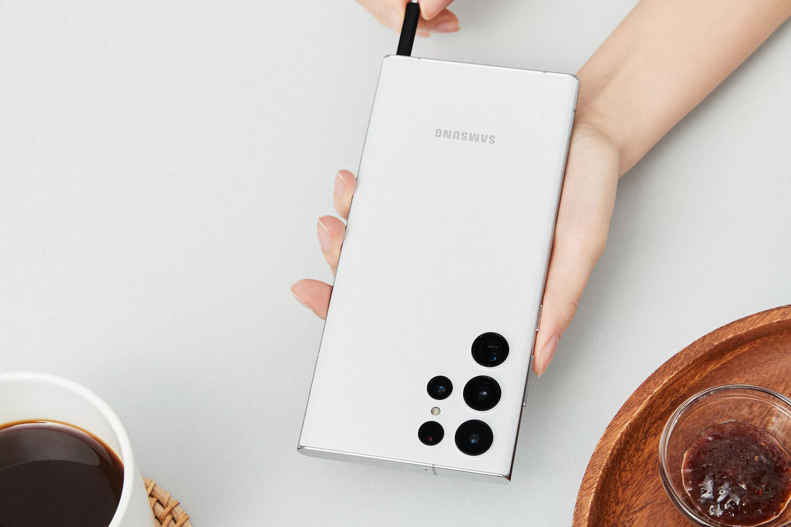
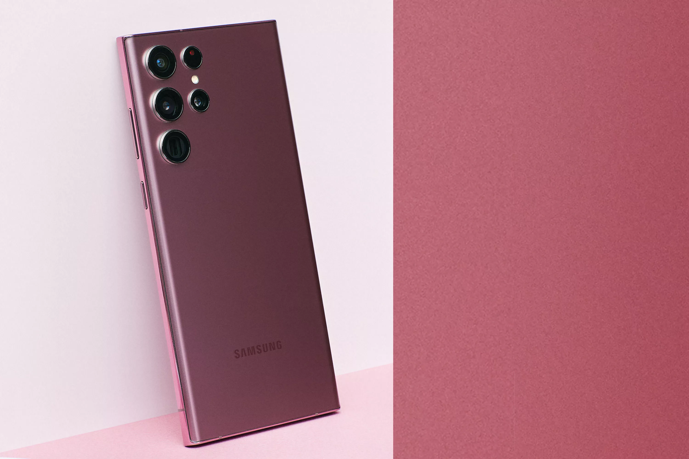

سامسونگ از پرچمدار جدیدش یعنی گلکسی اس22 اولترا رونمایی کرد
حالت شب

امیر محمد محمدی قره باغ
امروز یعنی دهم فوریه(20 بهمن) سامسونگ از پرچمدار امسالش رو نمایی کرد و دریک رویداد آنلاین این دستگاه شیک را به کاربران معرفی کرد
طراحی
طراحی این دستگاه دقیقا با رندر هایی که منتشر شده بود مطابقت دارد پنل پشتی و جلویی این دستگاه از گوریلاگلس ویکتوس بهره می برد و فریم آن از جنس آلومینیوم است این دستگاه از قلم پن هم پشتیبانی می کند و مانند سری نوت دارای قلم استایلوس است همچنین این دستگاه از گواهی نامه IP68 بهره می برد و باعث می شود تا 30 دقیقه بتواند در عمق 1.5 متری آب غوطه ور بماند این دستگاه نمایشگر 6.8 اینچی از نوع Oled بهره می برد.
سخت افزار و باتری
این دستگاه در دو نسخه یعنی نسخه اسنپدراگون 8 نسل یک و اگزینوس 2200 عرضه خواهند شد.این سری از گوشی های پرچمدار سامسونگ به دلیل همکاری این شرکت با AMD و قرار گرفتن چیپ RDNA2 از توان پردازشی گرافیکی بالایی برخوردار خواهد بود این دستگاه با مدل های 1024 | 12 و 512|12 و 256|12 و 128|8 روانه بازار می شوند رم این دستگاه از نوع LPDDR5 است و باتری این دستگاه 5000 میلی آمپر است و می توان با شارژر سیمی 45 وات و شارژر بیسیم 15 وات آن را شارژ کرد این دستگاه با اندروید 12 وOneUI 4 عرضه می شود
دوربین
دوربین اصلی این دستگاه یک لنز 108 مگاپیکسلی است درست همانند S21 Ultra ،این دستگاه یک دوربین اولتراواید 12 مگاپیکسلی با قابلیت فوکوس خودکار و دوربین تله فوتوی 10 مگاپیکسلی و دوربین سلفی 40 مگاپیکسلی دارد
